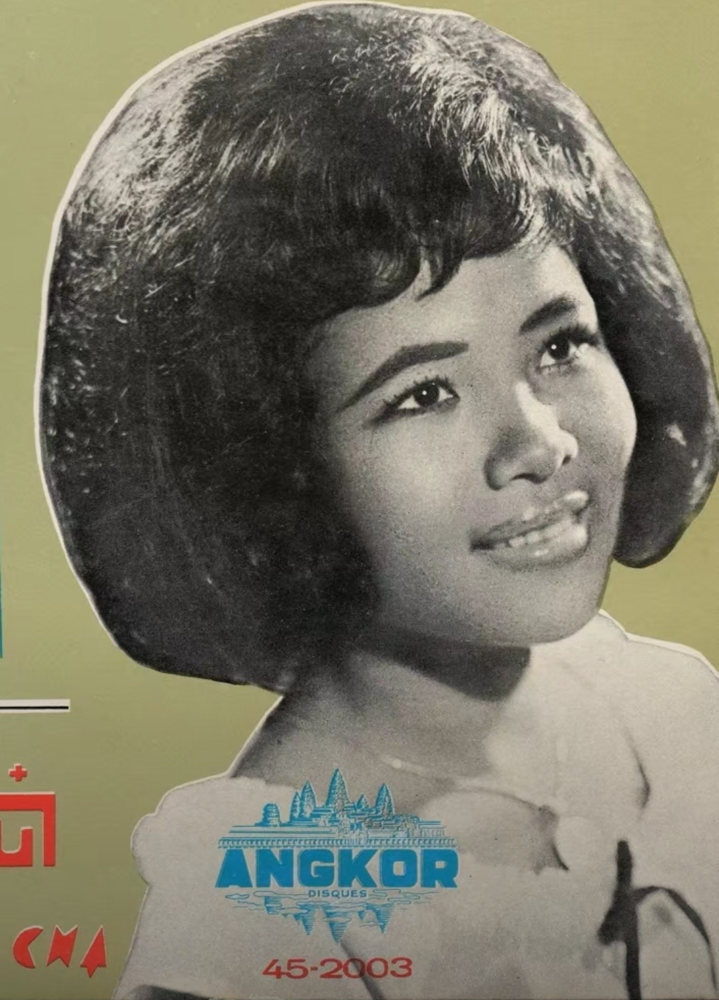

基本信息
- 中文名
- 宾兰、潘兰、潘荣
- 外文名
- Pen Ron/Pan Ron/Pen Ran/ប៉ែន រ៉ន
- 出生日期
- 1944年2月8日
- 逝世日期
- 1976年
- 职业
- 歌手、写手
- 活跃时期
- 1963 - 1975年
- 民族
- 柬埔寨
- 出生地
- 马德望
基本信息
Pen Ron（1944.2.8－1976），柬埔寨著名歌手，摇滚乐坛三巨头之一，以大胆前卫的音乐风格闻名，其作品融合了美洲摇滚元素，风格疯狂炫酷且富有趣味。
人物经历
Pen Ron出生于柬埔寨马德望市，据考证父亲是一名火车职员（又说音乐老师），母亲为家庭主妇。她是Im Song Soeun先生的初中同学，Houy Meas、Ros Sereysothea的高中学姐，曾就读于Net Yang高中，在校期间跟随教授Bun Thorng学习歌唱，后因家庭经济原因半途退学。
退学后，经Im Song Soeun建议，她踏上歌手道路，最初受邀到马德望的Steung Khiev酒吧驻唱——这是当时柬埔寨众多歌手开启职业生涯的第一步。
职业生涯
后来，Pen Ron被Im Song Soeun带入金边发展。在家乡马德望时期，她曾演唱歌曲《棉花花》并凭借此曲崭露头角。1967年抵达金边后，正式开启专业歌手生涯，1968年起逐渐以独立歌手身份进行创作。
她的音乐风格极具突破性，在传统高棉音乐中融入美洲摇滚元素，形成了独特的“疯狂又炫酷”的表演风格，成为当时柬埔寨流行音乐界的先锋人物。其姐妹Pen Rom和Pen Chantha（一说为侄女）也同为歌手，家族中音乐氛围浓厚。
人物关系
- Ros Sereysothea：搭档，同为柬埔寨摇滚乐坛代表人物,也是pan ron的同学
- Sinn Sisamouth：搭档，柬埔寨音乐之父，对其音乐发展有重要影响,并和pan ron合唱过,pan ron因与其合唱而成名
- Im Song Soeun：初中同学，事业引路人，帮助其开启驻唱及金边发展之路
- Pen Rom：姐妹，同为歌手，曾与Pen Ron共同经历流亡
成名之路
20世纪60年代，身为音乐家的柬埔寨国家元首诺罗敦·西哈努克(1922-2012)鼓励柬埔寨流行音乐的发展。
最初，来自法国和拉丁美洲的流行唱片被进口到该国并流行起来，激发了以金边为基地、由Sinn Sisamouth等歌手领导的繁荣的流行音乐舞台。
pan ron是这一音乐领域的早期参与者，1963年推出了她的一首热门歌曲，1966年她开始与Sinn Sisamouth合作录制唱片，成为了全国明星。
从20世纪60年代末开始，她与Sisamouth和当时其他著名的柬埔寨歌手录制了许多合作唱片，同时继续她的个人生涯。
1967年，受欢迎的Ros SereySothea的首次亮相对pan ron的职业生涯几乎没有影响，甚至可能扩大了她作为柬埔寨流行音乐第二女主角的知名度。
性格特点
pan ron以其奔放的个性和西方风格的发型和时尚而闻名，拒绝对高棉女性的传统要求，代表新的现代性别角色。她在舞台上的舞蹈和轻浮的歌词当时在柬埔寨被认为是可耻的。她歌曲的翻译标题表明她对浪漫和性的关注（例如“我不满意”和“我想成为你的情人”）和对传统求爱的拒绝（例如“太晚了老男人”） ）。在她的音乐生涯接近尾声时，pan ron仍然是一位三十出头的未婚人士(后来可能结婚)。她在歌曲《I'm 31》中谈到了这个话题，这是对 Ros Serey Sothea 的热门歌曲《I'm 16》的回应。
人物影响
Pan Ron是柬埔寨摇滚音乐发展的关键人物之一，她的音乐和形象代表了当时柬埔寨社会的文化变革和女性意识的觉醒，为后来的柬埔寨音乐人树立了榜样，对柬埔寨音乐的发展产生了深远影响。代表作品
pan ron在其职业生涯的12年(1963-1975),代表作品有《80公斤的女孩》（Kanha 80 Kilo）、《我想做你的爱人》（I Want to Be Your Lover），后者翻唱自中文歌《回头我也不要你》。此外，她还与Sinn Sisamouth、Ros Serey Sothea共同演唱过《Maok Pi Naok》（《Where Are You From?》）。通货膨胀
内战(1970-1975)通货膨胀下(1974前后达到顶峰)，即使有演出收入，货币的实际购买力也急剧下降。当时柬埔寨瑞尔大幅贬值，出现“上午赚的钱下午就不值钱”的情况，pan ron通过将收入兑换为实物（如粮食、布料等）维持生活，避免因货币贬值导致财富缩水。综合评价
Pan Ron 被认为是一位多才多艺的歌手，其曲目包括传统柬埔寨音乐、摇滚、麻花、恰恰、agogo、mambo、madizon、爵士乐和民谣。在讨论她的声音能力时，一位研究人员表示“宾兰发出的音符足以震碎玻璃。”几十年后，尼克·汉诺威 (Nick Hanover) 将歌曲“Rom Jongvak Twist”中柬埔寨和西方影响的独特结合描述为“柬埔寨对美国舞蹈热潮的演绎，听起来不像 Chubby Checker，而是像 Lydia Lunch”。在她的整个职业生涯中，据信她演奏了数百首歌曲，其中许多是她自己创作的。人生结局
1975年，金边被占领后，Pen Ron带着两个儿子被迫离开金边，途中与姐妹Pen Rom及丈夫走散，一路流亡至茶胶省。
据目击证人Bun Yeurn回忆，起初她并未认出Pen Ron，直到对方自报身份——“曾得到亲王赏识的著名歌手”，Bun Yeurn才认出她，并向其提供了米饭。
1976年初，占领方谎称金边居民可重返城市并继续从事旧业，Pen Ron在登记名单后被骗。根据目击者Lok Ta char Neng回忆，她与两个儿子被带至茶胶省巴蒂区（Bati district Trapeang Sap村）的Trop Kor寺庙（Wat Trop Kor）处决。去世前，她紧紧抱住两个儿子，眼中含泪。
参考资料：Preach Sorya与Pok Panhavuth的研究显示，后续探访中发现了埋葬Pen Ron的佛塔，视频记录显示佛塔打开后可见其尸骨。
部分图片由柯柯柯提供